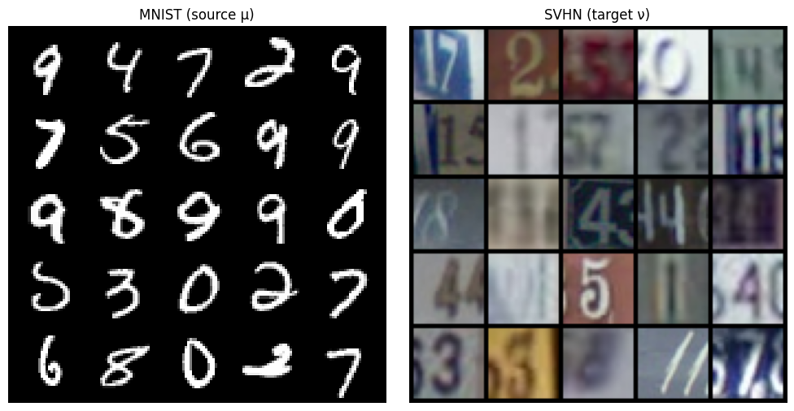
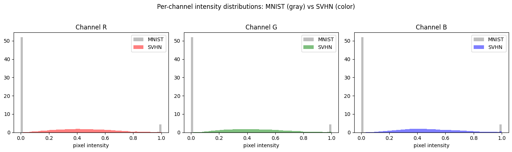
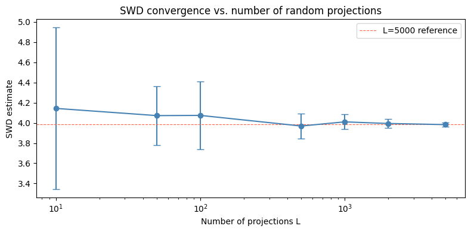
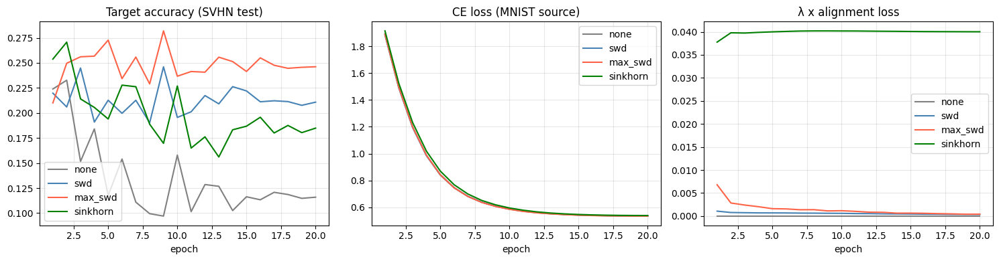
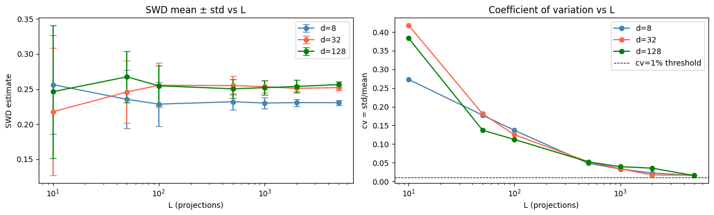

# cell 1 - imports and reproducibilityimport numpy as npimport torchimport torch.nn as nnimport torchvisionfrom torchvision import transformsfrom torch.utils.data import DataLoader, Subsetimport torch.nn.functional as Ffrom torch.optim import Adamfrom torch.optim.lr_scheduler import CosineAnnealingLRimport pandas as pdimport matplotlibimport matplotlib.pyplot as pltimport random, os, timeimport otfrom tqdm import tqdmSEED = 42random.seed(SEED)np.random.seed(SEED)torch.manual_seed(SEED)torch.cuda.manual_seed_all(SEED)torch.backends.cudnn.deterministic = Truetorch.backends.cudnn.benchmark = Falseprint(f"PyTorch {torch.__version__} | torchvision {torchvision.__version__}")print(f"CUDA available: {torch.cuda.is_available()}")device = torch.device("cuda" if torch.cuda.is_available() else "cpu")print(f"Device: {device}")
2026-06-09 03:02:23.179357: E external/local_xla/xla/stream_executor/cuda/cuda_fft.cc:467] Unable to register cuFFT factory: Attempting to register factory for plugin cuFFT when one has already been registered
WARNING: All log messages before absl::InitializeLog() is called are written to STDERR
E0000 00:00:1780974143.367048 146 cuda_dnn.cc:8579] Unable to register cuDNN factory: Attempting to register factory for plugin cuDNN when one has already been registered
E0000 00:00:1780974143.422800 146 cuda_blas.cc:1407] Unable to register cuBLAS factory: Attempting to register factory for plugin cuBLAS when one has already been registered
W0000 00:00:1780974143.889111 146 computation_placer.cc:177] computation placer already registered. Please check linkage and avoid linking the same target more than once.
W0000 00:00:1780974143.889153 146 computation_placer.cc:177] computation placer already registered. Please check linkage and avoid linking the same target more than once.
W0000 00:00:1780974143.889156 146 computation_placer.cc:177] computation placer already registered. Please check linkage and avoid linking the same target more than once.
W0000 00:00:1780974143.889158 146 computation_placer.cc:177] computation placer already registered. Please check linkage and avoid linking the same target more than once.
PyTorch 2.3.1+cu121 | torchvision 0.18.1+cu121
CUDA available: True
Device: cuda
Downloading http://yann.lecun.com/exdb/mnist/train-images-idx3-ubyte.gz
Failed to download (trying next):
HTTP Error 404: Not Found
Downloading https://ossci-datasets.s3.amazonaws.com/mnist/train-images-idx3-ubyte.gz
Downloading https://ossci-datasets.s3.amazonaws.com/mnist/train-images-idx3-ubyte.gz to /kaggle/working/data/MNIST/raw/train-images-idx3-ubyte.gz
Extracting /kaggle/working/data/MNIST/raw/train-images-idx3-ubyte.gz to /kaggle/working/data/MNIST/raw
Downloading http://yann.lecun.com/exdb/mnist/train-labels-idx1-ubyte.gz
Failed to download (trying next):
HTTP Error 404: Not Found
Downloading https://ossci-datasets.s3.amazonaws.com/mnist/train-labels-idx1-ubyte.gz
Downloading https://ossci-datasets.s3.amazonaws.com/mnist/train-labels-idx1-ubyte.gz to /kaggle/working/data/MNIST/raw/train-labels-idx1-ubyte.gz
Extracting /kaggle/working/data/MNIST/raw/train-labels-idx1-ubyte.gz to /kaggle/working/data/MNIST/raw
Downloading http://yann.lecun.com/exdb/mnist/t10k-images-idx3-ubyte.gz
Failed to download (trying next):
HTTP Error 404: Not Found
Downloading https://ossci-datasets.s3.amazonaws.com/mnist/t10k-images-idx3-ubyte.gz
Downloading https://ossci-datasets.s3.amazonaws.com/mnist/t10k-images-idx3-ubyte.gz to /kaggle/working/data/MNIST/raw/t10k-images-idx3-ubyte.gz
Extracting /kaggle/working/data/MNIST/raw/t10k-images-idx3-ubyte.gz to /kaggle/working/data/MNIST/raw
Downloading http://yann.lecun.com/exdb/mnist/t10k-labels-idx1-ubyte.gz
Failed to download (trying next):
HTTP Error 404: Not Found
Downloading https://ossci-datasets.s3.amazonaws.com/mnist/t10k-labels-idx1-ubyte.gz
Downloading https://ossci-datasets.s3.amazonaws.com/mnist/t10k-labels-idx1-ubyte.gz to /kaggle/working/data/MNIST/raw/t10k-labels-idx1-ubyte.gz
# cell 5 - 5×5 sample grid: MNIST (left) and SVHN (right)def make_grid_figure(dataset, n=5, title="", gray=False): indices = random.sample(range(len(dataset)), n*n) imgs = [dataset[i][0] for i in indices] grid = torchvision.utils.make_grid(imgs, nrow=n, padding=2, normalize=True) return grid.permute(1,2,0).numpy() if not gray else grid[0].numpy()fig, axes = plt.subplots(1, 2, figsize=(10, 5))# MNIST: (1,28,28) → replicate to 3 channels for displaymnist_imgs = [mnist_train[i][0].repeat(3,1,1) for i in random.sample(range(len(mnist_train)), 25)]svhn_imgs = [svhn_train[i][0] for i in random.sample(range(len(svhn_train)), 25)]for ax, imgs, ttl in zip(axes, [mnist_imgs, svhn_imgs], ["MNIST (source μ)", "SVHN (target ν)"]): grid = torchvision.utils.make_grid(imgs, nrow=5, padding=2, normalize=True) ax.imshow(grid.permute(1,2,0).numpy()); ax.set_title(ttl); ax.axis('off')plt.tight_layout(); plt.show()

# cell 6 - per-channel intensity histograms overlaid# MNIST is 1-channel; we replicate it to 3 channels to compare on the same axes.# sample 2000 images from each domain for speed.N = 2000mnist_sample = torch.stack([mnist_train[i][0].repeat(3,1,1) for i in range(N)]) # (N,3,28,28)svhn_sample = torch.stack([svhn_train[i][0] for i in range(N)]) # (N,3,32,32)colors = ['red','green','blue']ch_names = ['R','G','B']fig, axes = plt.subplots(1, 3, figsize=(14, 4))for c, (ax, col, ch) in enumerate(zip(axes, colors, ch_names)): ax.hist(mnist_sample[:,c].flatten().numpy(), bins=64, alpha=0.5, color='gray', density=True, label='MNIST') ax.hist(svhn_sample[:,c].flatten().numpy(), bins=64, alpha=0.5, color=col, density=True, label='SVHN') ax.set_title(f"Channel {ch}"); ax.set_xlabel("pixel intensity"); ax.legend()plt.suptitle("Per-channel intensity distributions: MNIST (gray) vs SVHN (color)", y=1.02)plt.tight_layout(); plt.show()

# cell 7 - quantify domain gap: per-channel mean and stdfor name, tensor in [("MNIST (replicated)", mnist_sample), ("SVHN", svhn_sample)]: means = tensor.mean(dim=(0,2,3)) stds = tensor.std(dim=(0,2,3)) print(f"{name}") for c, ch in enumerate(['R','G','B']): print(f" {ch}: mean={means[c]:.4f} std={stds[c]:.4f}") print()
# cell 16 - plot convergencemeans = [results[L][0] for L in Ls]stds = [results[L][1] for L in Ls]plt.figure(figsize=(8, 4))plt.errorbar(Ls, means, yerr=stds, fmt='o-', capsize=4, color='steelblue')plt.axhline(means[-1], color='tomato', ls='--', lw=0.8, label='L=5000 reference')plt.xscale('log')plt.xlabel("Number of projections L"); plt.ylabel("SWD estimate")plt.title("SWD convergence vs. number of random projections")plt.legend(); plt.tight_layout(); plt.show()

# cell 17 - triangle inequality verification setupdef swd_from_samples(X, Y, n_proj=500, seed=0): """wrapper returning scalar SWD (not squared) for metric verification.""" return sliced_wasserstein(X, Y, n_proj=n_proj, seed=seed) ** 0.5
# cell 18 - generate 1000 random distribution triplets and test triangle inequalityn_triplets = 1000n_samples = 200d = 8 # non-trivial dimensionn_proj = 500violations = []margins = [] # swd(mu,rho) - swd(mu,nu) - swd(nu,rho); negative = satisfiedfor t in range(n_triplets): # three distributions in distinct regions of R^d center_mu = torch.randn(d) * 3 center_nu = torch.randn(d) * 3 center_rho = torch.randn(d) * 3 mu = torch.randn(n_samples, d) * 0.5 + center_mu nu = torch.randn(n_samples, d) * 0.5 + center_nu rho = torch.randn(n_samples, d) * 0.5 + center_rho # independent seeds per pair — worst-case test d_mu_rho = swd_from_samples(mu, rho, n_proj, seed=t*3+0) d_mu_nu = swd_from_samples(mu, nu, n_proj, seed=t*3+1) d_nu_rho = swd_from_samples(nu, rho, n_proj, seed=t*3+2) margin = d_mu_rho - d_mu_nu - d_nu_rho margins.append(margin) if margin > 0: violations.append(margin)margins = np.array(margins)print(f"Triplets tested: {n_triplets}")print(f"Violations (margin>0): {len(violations)}")print(f"Pass rate: {(n_triplets - len(violations))/n_triplets*100:.2f}%")print(f"Max violation: {max(violations) if violations else 0:.6f}")print(f"Mean margin: {margins.mean():.6f} (negative = satisfied with slack)")print(f"Std of margin: {margins.std():.6f}")
Triplets tested: 1000
Violations (margin>0): 0
Pass rate: 100.00%
Max violation: 0.000000
Mean margin: -4.131103 (negative = satisfied with slack)
Std of margin: 1.658141
# cell 19 - repeat with shared directions (violations should vanish)violations_shared = []for t in range(n_triplets): center_mu = torch.randn(d) * 3 center_nu = torch.randn(d) * 3 center_rho = torch.randn(d) * 3 mu = torch.randn(n_samples, d) * 0.5 + center_mu nu = torch.randn(n_samples, d) * 0.5 + center_nu rho = torch.randn(n_samples, d) * 0.5 + center_rho # same seed for all three pairs — shared projection directions d_mu_rho = swd_from_samples(mu, rho, n_proj, seed=t) d_mu_nu = swd_from_samples(mu, nu, n_proj, seed=t) d_nu_rho = swd_from_samples(nu, rho, n_proj, seed=t) margin = d_mu_rho - d_mu_nu - d_nu_rho if margin > 0: violations_shared.append(margin)print(f"Shared directions — violations: {len(violations_shared)}/{n_triplets}")print(f"Max violation: {max(violations_shared) if violations_shared else 0:.2e}")
Shared directions — violations: 0/1000
Max violation: 0.00e+00
# cell 20 - violation rate vs LLs_test = [10, 50, 100, 500, 1000]for L in Ls_test: viols = 0 for t in range(500): mu = torch.randn(200, d) * 0.5 + torch.randn(d)*3 nu = torch.randn(200, d) * 0.5 + torch.randn(d)*3 rho = torch.randn(200, d) * 0.5 + torch.randn(d)*3 d1 = swd_from_samples(mu, rho, L, seed=t*3+0) d2 = swd_from_samples(mu, nu, L, seed=t*3+1) d3 = swd_from_samples(nu, rho, L, seed=t*3+2) if d1 - d2 - d3 > 0: viols += 1 print(f"L={L:>5} violation rate: {viols/500*100:.1f}%")
# cell 26 - sinkhorn from scratch with autograd supportdef sinkhorn(X: torch.Tensor, Y: torch.Tensor, eps: float=0.1, n_iter: int=100) -> torch.Tensor: """ Entropic OT distance via log-domain Sinkhorn-Knopp iterations. X, Y: (n, d) sample tensors. Uniform marginals assumed. Returns scalar OT cost (differentiable w.r.t. X, Y). """ n, m = len(X), len(Y) a = torch.ones(n, device=X.device) / n b = torch.ones(m, device=Y.device) / m C = torch.cdist(X, Y, p=2) ** 2 # (n, m) log_a = a.log() # (n,) log_b = b.log() # (m,) # initialize dual variables in log space f = torch.zeros(n, device=X.device) # (n,) g = torch.zeros(m, device=X.device) # (m,) for _ in range(n_iter): # f update: (n,) — logsumexp over m targets f = eps * log_a - eps * torch.logsumexp((g.unsqueeze(0) - C) / eps, dim=1) # g update: (m,) — logsumexp over n sources g = eps * log_b - eps * torch.logsumexp((f.unsqueeze(1) - C) / eps, dim=0) # recover transport plan and compute primal cost log_pi = (f.unsqueeze(1) + g.unsqueeze(0) - C) / eps pi = torch.exp(log_pi) # true transport plan return (pi * C).sum()
# cell 27 - verify against POT on small nX_small = torch.randn(100, 2)Y_small = torch.randn(100, 2) + 2.0a = np.ones(100)/100; b = np.ones(100)/100M = ot.dist(X_small.numpy(), Y_small.numpy(), metric='sqeuclidean')ours = sinkhorn(X_small, Y_small, eps=0.5, n_iter=300).item()ref = float(ot.sinkhorn2(a, b, M, reg=0.5))print(f"eps=0.50; ours={ours:.4f}; pot={ref:.4f}; err={abs(ours-ref):.2e}")# marginal check: rows and cols of pi should sum to 1/nwith torch.no_grad(): C_ = torch.cdist(X_small, Y_small)**2 f_ = torch.zeros(100); g_ = torch.zeros(100) for _ in range(300): f_ = 0.5*torch.log(torch.ones(100)/100) - 0.5*torch.logsumexp((g_-C_)/0.5, dim=1) g_ = 0.5*torch.log(torch.ones(100)/100) - 0.5*torch.logsumexp((f_.unsqueeze(1)-C_)/0.5, dim=0) pi_ = torch.exp((f_.unsqueeze(1)+g_.unsqueeze(0)-C_)/0.5) print(f"Row marginal error: {(pi_.sum(1) - 1/100).abs().max():.2e}") print(f"Col marginal error: {(pi_.sum(0) - 1/100).abs().max():.2e}")
# cell 37 - diagnostic check then full runprint("DIAGNOSTIC: loss scales after epoch 1\n")print(f"{'method':<12} {'CE':>8} {'align':>12} {'λ·align':>10} {'ratio':>8} status")print("-"*60)for method in ['swd', 'max_swd', 'sinkhorn']: enc_tmp = Encoder(embed_dim=128).to(device) clf_tmp = Classifier(embed_dim=128).to(device) opt_tmp = Adam(list(enc_tmp.parameters()) + list(clf_tmp.parameters()), lr=1e-3) ce, alg = train_epoch(enc_tmp, clf_tmp, opt_tmp, mnist_loader, svhn_loader, method, LAM[method], device) ratio = LAM[method] * alg / (ce + 1e-8) status = "OK" if ratio < 0.5 else "REDUCE LAM" print(f"{method:<12} {ce:>8.4f} {alg:>12.6f} {LAM[method]*alg:>10.5f} {ratio:>8.4f} {status}")print("\nProceeding to full run if all statuses report OK...\n")# full runresults = {}for method in ['none', 'swd', 'max_swd', 'sinkhorn']: print(f"\n{'='*60}\n{method.upper()}") results[method] = run_experiment(method)
DIAGNOSTIC: loss scales after epoch 1
method CE align λ·align ratio status
------------------------------------------------------------
swd 1.5266 0.051086 0.00409 0.0027 OK
max_swd 1.7050 0.369807 0.01479 0.0087 OK
sinkhorn 1.5634 0.767345 0.03837 0.0245 OK
Proceeding to full run if all statuses report OK...
============================================================
NONE
# cell 38 - reportprint("REPORT\n")# 1. overfitting check - ce should not collapse below 0.05 before epoch 10print("\n[1] CE TRAJECTORY (overfit check — should stay > 0.05 for epochs 1-10)\n")print(f"{'Method':<12} " + " ".join(f"ep{i+1:02d}" for i in range(10)))print("-" * 120)for method, hist in results.items(): ces = hist['ce'][:10] flags = ["!" if c < 0.005 else " " for c in ces] vals = " ".join(f"{c:.3f}{f}" for c, f in zip(ces, flags)) print(f"{method:<12} {vals}")# 2. lambda·align / ce ratio - should stay 0.05-0.3 throughoutprint("\n[2] λ·ALIGN/CE RATIO PER EPOCH (target: 0.05–0.30)\n")print(f"{'Method':<12} " + " ".join(f"ep{i+1:02d}" for i in range(20)))print("-" * 120)for method, hist in results.items(): lam = hist['lam'] ratios = [lam * a / (c + 1e-8) for a, c in zip(hist['align'], hist['ce'])] flags = ["!" if (r < 0.01 or r > 0.5) else " " for r in ratios] vals = " ".join(f"{r:.2f}{f}" for r, f in zip(ratios, flags)) print(f"{method:<12} {vals}")# 3. accuracy trend - alignment methods should beat none, monotonically increasingprint("\n[3] TARGET ACCURACY PER EPOCH\n")print(f"{'Method':<12} " + " ".join(f"ep{i+1:02d}" for i in range(20)))print("-" * 120)for method, hist in results.items(): accs = hist['target_acc'] vals = " ".join(f"{a:.3f}" for a in accs) print(f"{method:<12} {vals}")# 4. summary table 1print("\n[4] SUMMARY\n")print(f"{'Method':<12} {'Best Acc':>9} {'Beat None?':>11} {'CE ep20':>8} {'Avg Ratio':>10} {'Ratio OK?':>10}")print("-" * 120)none_best = results['none']['best_acc']for method, hist in results.items(): lam = hist['lam'] ratios = [lam * a / (c + 1e-8) for a, c in zip(hist['align'], hist['ce'])] avg_ratio = np.mean(ratios) ratio_ok = all(0.01 < r < 0.5 for r in ratios) if method != 'none' else True beat = "✓" if hist['best_acc'] > none_best else "✗" print(f"{method:<12} {hist['best_acc']:>9.4f} {beat:>11} " f"{hist['ce'][-1]:>8.4f} {avg_ratio:>10.4f} {'✓' if ratio_ok else '✗':>10}")# 4.5 summary table 2print("\n[4.5] SYNTHESIS\n")print(f"\n{'Method':<12} {'Final Acc':>10} {'Best Acc':>9} {'Avg Time/Epoch':>15} {'λ·Align (avg)':>14}")print("-"*120)for method, hist in results.items(): lam = hist['lam'] print(f"{method:<12} " f"{hist['target_acc'][-1]:>10.4f} " f"{hist['best_acc']:>9.4f} " f"{np.mean(hist['epoch_time']):>15.1f}s " f"{np.mean(hist['align'])*lam:>14.5f}")# 5. monotonicity check for swd/max_swdprint("\n[5] MONOTONICITY CHECK (acc should trend upward, not collapse after ep2)\n")for method in ['swd', 'max_swd', 'sinkhorn']: accs = results[method]['target_acc'] peak_ep = int(np.argmax(accs)) + 1 final = accs[-1] peak = max(accs) drop = peak - final trend = "GOOD" if peak_ep >= 5 and drop < 0.05 else f"PEAKED ep{peak_ep}, dropped {drop:.3f}" print(f" {method:<12} peak={peak:.4f} @ep{peak_ep} final={final:.4f} {trend}")print("\n[6] PASS/FAIL\n")all_beat = all(results[m]['best_acc'] > none_best for m in ['swd', 'max_swd', 'sinkhorn'])no_overfit = all(results[m]['ce'][9] > 0.005 for m in results) # ce at epoch 10print(f" All alignment methods beat none: {'PASS' if all_beat else 'FAIL'}")print(f" No CE collapse by epoch 10: {'PASS' if no_overfit else 'FAIL'}")
# cell 39 - learning curvesfig, axes = plt.subplots(1, 3, figsize=(15, 4))colors = {'none':'gray', 'swd':'steelblue', 'max_swd':'tomato', 'sinkhorn':'green'}for method, hist in results.items(): lam = hist['lam'] epochs = range(1, len(hist['target_acc']) + 1) axes[0].plot(epochs, hist['target_acc'], color=colors[method], label=method) axes[1].plot(epochs, hist['ce'], color=colors[method], label=method) axes[2].plot(epochs, [lam*a for a in hist['align']], color=colors[method], label=method)axes[0].set_title("Target accuracy (SVHN test)"); axes[0].set_xlabel("epoch")axes[1].set_title("CE loss (MNIST source)"); axes[1].set_xlabel("epoch")axes[2].set_title("λ x alignment loss"); axes[2].set_xlabel("epoch")for ax in axes: ax.legend(); ax.grid(alpha=0.3)plt.tight_layout(); plt.show()

# cell 40 - SWD variance measurement across L and ddef swd_variance_experiment(X, Y, Ls, n_trials=20): """ For each L, run n_trials independent SWD estimates. Returns dict L -> (mean, std, cv) where cv = std/mean. """ results = {} for L in Ls: estimates = [ sliced_wasserstein(X, Y, n_proj=L, seed=s) for s in range(n_trials) ] mean = np.mean(estimates) std = np.std(estimates) results[L] = (mean, std, std/mean if mean > 0 else 0) return results
# cell 41 - ablation across L for multiple embedding dimsLs = [10, 50, 100, 500, 1000, 2000, 5000]dims = [8, 32, 128]ablation = {} # dim -> {L -> (mean, std, cv)}for d in dims: X = torch.randn(500, d) Y = torch.randn(500, d) + 0.5 # fixed shift for comparability ablation[d] = swd_variance_experiment(X, Y, Ls, n_trials=20) print(f"\nd={d}") print(f"{'L':>6} {'mean':>10} {'std':>10} {'cv (std/mean)':>14} {'converged':>10}") ref = ablation[d][Ls[-1]][0] for L in Ls: mean, std, cv = ablation[d][L] converged = "YES" if cv < 0.01 else "no" print(f"{L:>6} {mean:>10.4f} {std:>10.4f} {cv:>14.4f} {converged:>10}")
d=8
L mean std cv (std/mean) converged
10 0.2563 0.0700 0.2730 no
50 0.2354 0.0417 0.1774 no
100 0.2286 0.0313 0.1368 no
500 0.2320 0.0112 0.0485 no
1000 0.2302 0.0077 0.0333 no
2000 0.2307 0.0052 0.0224 no
5000 0.2307 0.0037 0.0161 no
d=32
L mean std cv (std/mean) converged
10 0.2179 0.0911 0.4180 no
50 0.2459 0.0445 0.1810 no
100 0.2554 0.0319 0.1249 no
500 0.2550 0.0134 0.0524 no
1000 0.2534 0.0086 0.0339 no
2000 0.2511 0.0043 0.0172 no
5000 0.2521 0.0042 0.0166 no
d=128
L mean std cv (std/mean) converged
10 0.2464 0.0944 0.3833 no
50 0.2674 0.0367 0.1371 no
100 0.2547 0.0286 0.1124 no
500 0.2505 0.0131 0.0522 no
1000 0.2520 0.0099 0.0395 no
2000 0.2537 0.0090 0.0355 no
5000 0.2564 0.0040 0.0156 no
# cell 42 - identify minimum L for convergence (practical threshold cv < 5%)THRESHOLD = 0.05print(f"\n{'d':>6} {'min L (cv<5%)':>14} {'cv at that L':>14}")print("-"*40)for d in dims: min_L = None for L in Ls: if ablation[d][L][2] < THRESHOLD: min_L = L; break cv_val = ablation[d][min_L][2] if min_L else ablation[d][Ls[-1]][2] print(f"{d:>6} {str(min_L) if min_L else '>5000':>14} {cv_val:>14.4f}")
d min L (cv<5%) cv at that L
----------------------------------------
8 500 0.0485
32 1000 0.0339
128 1000 0.0395
# cell 43 - wall-clock time vs Lprint(f"\n{'L':>6} {'time (ms)':>12}")print("-"*22)X128 = torch.randn(500, 128)Y128 = torch.randn(500, 128) + 0.5for L in Ls: t0 = time.perf_counter() for _ in range(20): sliced_wasserstein(X128, Y128, n_proj=L) t = (time.perf_counter() - t0) / 20 * 1000 print(f"{L:>6} {t:>12.2f}")
L time (ms)
----------------------
10 1.21
50 3.71
100 4.03
500 18.36
1000 36.82
2000 75.21
5000 217.38
# cell 44 - convergence plotfig, axes = plt.subplots(1, 2, figsize=(13, 4))colors = {8: 'steelblue', 32: 'tomato', 128: 'green'}for d in dims: means = [ablation[d][L][0] for L in Ls] stds = [ablation[d][L][1] for L in Ls] axes[0].errorbar(Ls, means, yerr=stds, fmt='o-', capsize=4, color=colors[d], label=f'd={d}') axes[1].plot(Ls, [ablation[d][L][2] for L in Ls], 'o-', color=colors[d], label=f'd={d}')axes[0].set_xscale('log'); axes[0].set_xlabel("L (projections)")axes[0].set_ylabel("SWD estimate"); axes[0].set_title("SWD mean ± std vs L")axes[0].legend()axes[1].axhline(0.01, color='k', ls='--', lw=0.8, label='cv=1% threshold')axes[1].set_xscale('log'); axes[1].set_xlabel("L (projections)")axes[1].set_ylabel("cv = std/mean"); axes[1].set_title("Coefficient of variation vs L")axes[1].legend()plt.tight_layout(); plt.show()

# cell 45 - benchmark table using best results from all stagesbenchmark = { 'Method': ['No Adapt', 'SWD', 'Max-SWD', 'Sinkhorn'], 'Best Acc': [results['none']['best_acc'], results['swd']['best_acc'], results['max_swd']['best_acc'], results['sinkhorn']['best_acc']], 'Final Acc': [results[m]['target_acc'][-1] for m in ['none','swd','max_swd','sinkhorn']], 'Time/Epoch': [f"{np.mean(results[m]['epoch_time']):.1f}s" for m in ['none','swd','max_swd','sinkhorn']], 'λ·Align (avg)': [f"{np.mean(results[m]['align'])*results[m]['lam']:.5f}" for m in ['none','swd','max_swd','sinkhorn']],}df = pd.DataFrame(benchmark)print(df.to_string(index=False))
Method Best Acc Final Acc Time/Epoch λ·Align (avg)
No Adapt 0.232675 0.115896 19.5s 0.00000
SWD 0.246043 0.210779 20.1s 0.00058
Max-SWD 0.281922 0.246120 21.5s 0.00144
Sinkhorn 0.270667 0.184849 26.5s 0.03994